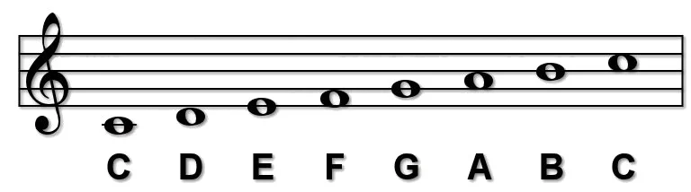
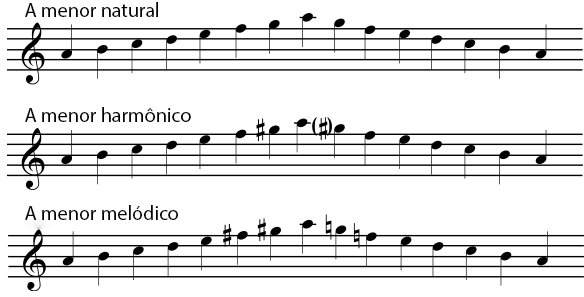

As escalas são a base da música ocidental e uma das primeiras coisas que músicos aprendem. Elas consistem em uma sequência de notas organizadas de acordo com um padrão específico de intervalos. A escala dá à música sua sensação tonal, seja maior, menor, ou algo mais exótico.
Uma escala é uma série de notas tocadas em ordem crescente ou decrescente. Cada escala começa em uma nota raiz (ou tônica) e segue um padrão fixo de tons e semitons (a menor distância entre duas notas) até retornar à tônica uma oitava acima ou abaixo.
Por exemplo, a escala de Dó maior, uma das mais comuns, tem as seguintes notas: C (Dó), D (Ré), E (Mi), F (Fá), G (Sol), A (Lá), B (Si), e volta ao C.
As escalas maiores têm um som "feliz" ou "brilhante" e seguem um padrão de tons e semitons específico. O padrão para qualquer escala maior é:
Tônica - Tom - Tom - Semitom - Tom - Tom - Tom - Semitom
Por exemplo, a escala de Dó maior segue exatamente esse padrão e não possui sustenidos ou bemóis.
|  |
|---|
As escalas menores têm um som mais "triste" ou "sombrio" em comparação às maiores. A escala menor natural segue o seguinte padrão:
Tônica - Tom - Semitom - Tom - Tom - Semitom - Tom - Tom
Por exemplo, a escala de Lá menor (relativa à escala de Dó maior) tem as notas: A (Lá), B (Si), C (Dó), D (Ré), E (Mi), F (Fá), G (Sol), A (Lá).
Existem três variações de escalas menores que músicos frequentemente aprendem:
|  |
|---|
As escalas são fundamentais porque são usadas como a base para construir melodias e harmonias. Compreender as escalas ajuda a entender quais notas "funcionam" juntas e a criar músicas que soem coesas. Elas também são essenciais para improvisação e composição, fornecendo um conjunto de notas dentro de um contexto tonal específico.
Ao praticar escalas, você melhora sua técnica, controle sobre o instrumento e desenvolve uma compreensão mais profunda da linguagem musical. Lembre-se de que a prática regular é a chave para dominar as escalas.